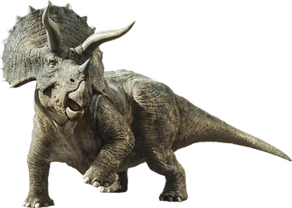

Triceratops
Período: Cretácico Superior
Altura: 3 m
Lonxitude: 9 m
Dieta: herbívora
O triceratops era un dinosauro herbívoro que viviu hai uns 68-66 millóns de anos. Caracterizada pola súa gran cabeza con tres cornos (dous sobre os ollos e un no nariz) e un colar de óso, medía ata 9 metros de longo e pesaba varias toneladas, polo que é un gran defensor.
